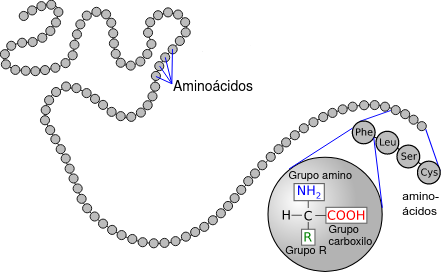

¿Qué son las proteínas?
Las proteínas son las macromoléculas más abundantes en el organismo, ya que no solo forman parte de la estructura muscular.
Entre las funciones de las proteínas podemos encontrar:
| Transporte | La hemoglobina transporta oxígeno al los tejidos. |
| Biocatalizadora | Mediante enzimas que catalizan las reacciones químicas en el organismo. |
| Contráctil | Como las proteínas que forman el tejido muscular o la actina-miosina que está implicada en la capacidad de contracción del músculo. |
| Defensiva | Realizada por los anticuerpos. |
| Hormonal | Algunas hormonas como la insulina y el glucagón están formadas por proteínas. |
| Estructural | Colágeno, elastina, queratina, etc. |
| Nutritiva | Cuando las reservas de lípidos y glúcidos del organismo se han agotado, se recurre a las proteínas como fuente de energía.
Las proteínas están formadas por cadenas de aminoácidos unidos entre si por enlaces peptídicos formando cadenas. En la imagen inferior se observa la estructura primaria de una proteína:
|
Las proteínas están formadas por cadenas de aminoácidos unidos entre si por enlaces peptídicos formando cadenas. En la imagen inferior se observa la estructura primaria de una proteína:

Estas cadenas se pliegan y entrelazan entre si formando estructuras que determinan su función en el organismo.
Algunas proteínas no están compuestas exclusivamente de aminoácidos, por lo que de acuerdo a su composición pueden ser:
Homoproteínas
Están formadas exclusivamente por aminoácidos. Algunos ejemplos son la albúmina, el colágeno, la queratina o la elastina.
Heteroproteínas
Están conformadas por una parte proteica y una no proteica. Algunos ejemplos son las glucoproteínas o las lipoproteínas.